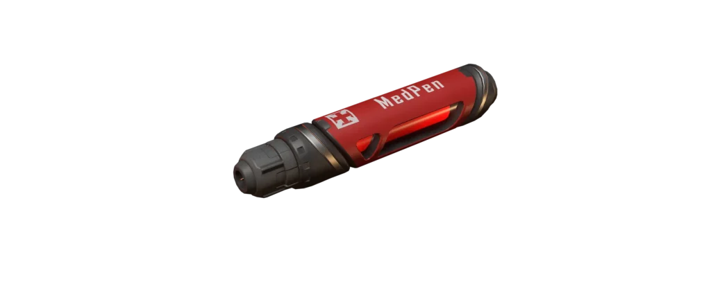
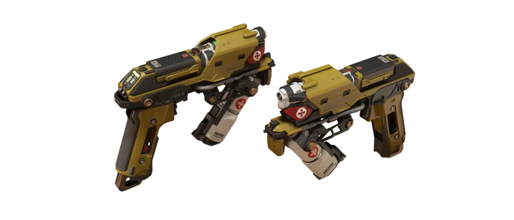
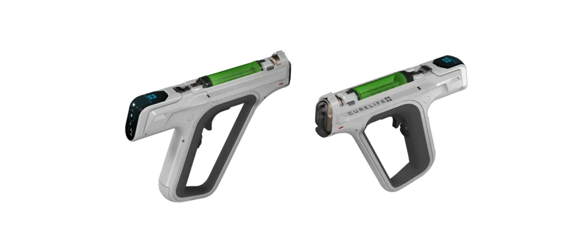
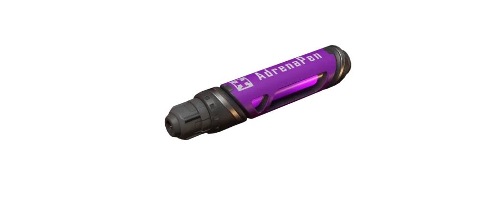
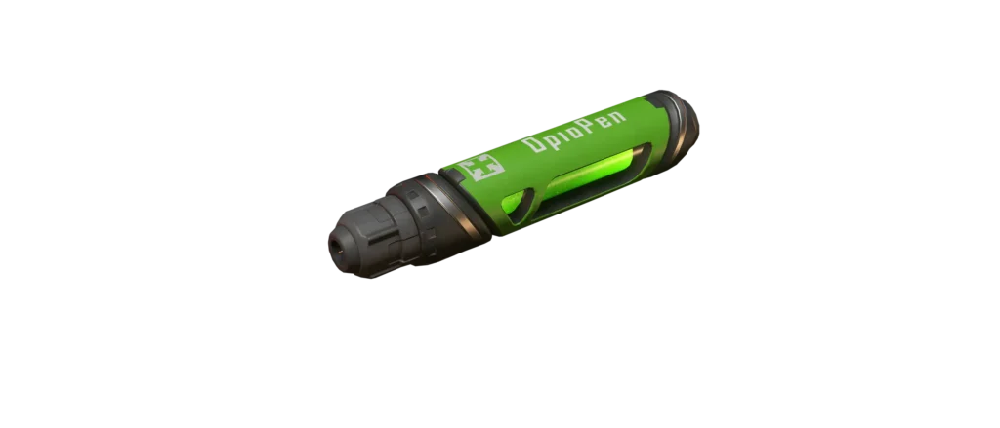
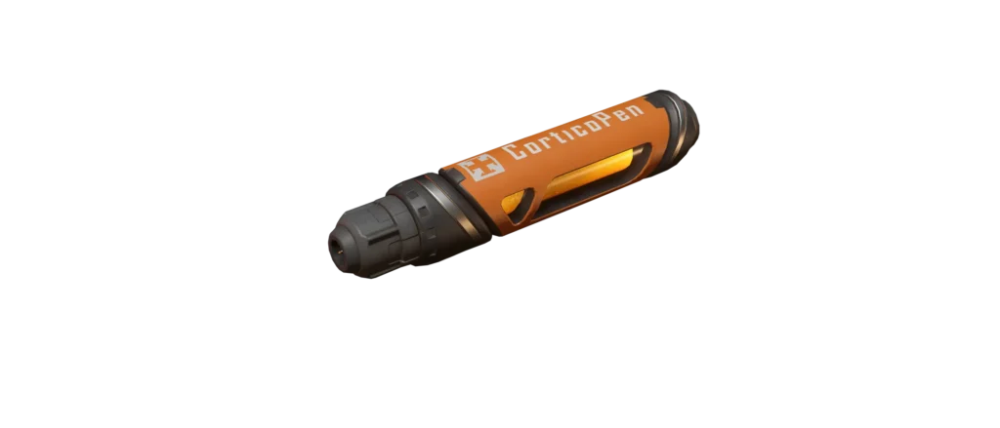
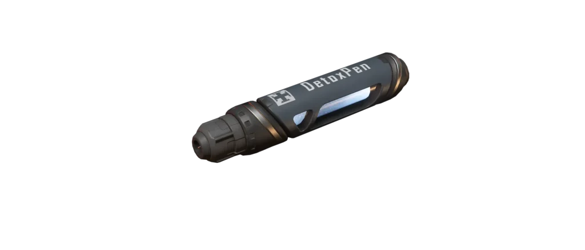

Guide du Gameplay Médical
L’univers persistant de Star Citizen est doté d’un système médical complet, avec des hôpitaux, des niveaux de blessures et une pléthore de médicaments et d’outils. Ce guide vous prépare à survivre dans le Verse et à soigner efficacement vos coéquipiers.
1. Les Outils du Métier
Un bon infirmier garde une panoplie d’outils à portée de main. Qu’il s’agisse d’objets à usage unique ou d’outils de guérison fiables, voici l'équipement indispensable à tout professionnel de la santé en herbe.

Stylos médicaux
Simples et efficaces, les stylos (Medpens) délivrent rapidement et facilement le médicament dont vous avez besoin en une seule injection.

Multi-Tool Médical
À l’aide de l’accessoire médical, votre Multi-Tool classique peut être utilisé pour administrer de l’Hemozal à distance.

Outil médical Curelife
L'outil indispensable. Il administre n’importe quel médicament en quantités précises et fournit des scanners médicaux ultra-détaillés.
Utilisation de l'outil médical Curelife
Pointez l’outil sur une personne pour détecter ses blessures. Le Mode Basique applique de l’Hemozal standard. Le Mode Avancé vous permet de doser les cinq médicaments de votre choix. Maintenez le clic droit pour viser, puis appuyez sur la touche F pour interagir avec l’écran holographique de l’outil et ajuster les dosages.
2. Médicaments et Niveau de Drogue (BDL)
L’utilisation de ces produits augmente votre Blood Drug Level (BDL). Indiqué sur le HUD de votre casque, un BDL atteignant 50% provoque un état de surdose (vision floue, mouvements erratiques, tremblements) et des dégâts mortels s'il n'est pas traité.

Hémozal
Arrête les hémorragies, restaure la santé et réanime en cas d'incapacité.

Demexatrine
Soulage la fatigue musculaire et les symptômes des commotions cérébrales.

Roxaphen
Soulage les blessures graves aux jambes ou aux bras entravant le mouvement.

Stérogène
Traite la faiblesse musculaire ou respiratoire, comme une blessure au thorax.

Resurgera
Réduit le niveau de BDL au fil du temps et soulage les symptômes de surdose.
3. Les Niveaux de Blessures
Les blessures, signalées en bas à gauche de votre ATH, affectent directement vos capacités de déplacement et de combat.
- Blessure Tiers 3 (Mineure) : Diminue la santé max. Effets selon la zone (armes difficiles à viser pour les bras, vitesse réduite pour les jambes, vision floue pour la tête). Soignable dans un lit médical de Niveau 3 (ex: Cutlass Red).
- Blessure Tiers 2 (Modérée) : Votre personnage se met à boiter et grogner de douleur. Si touché à la tête/poitrine, stabilisation requise. Soignable dans un lit médical de Niveau 2 (ex: Cliniques, Carrack, 890 Jump).
- Blessure Tiers 1 (Grave) : Immobilisation sévère. Impossible de tenir un objet ou de se lever. Soignable uniquement dans un lit médical de Niveau 1 (Hôpitaux des grandes villes).
4. Installations Médicales & Urgences
Les centres médicaux sont vitaux. Utilisez les consoles d'enregistrement des patients dans les hôpitaux ou les cliniques pour obtenir une chambre assignée et vous soigner.
En cas d'Incapacité (0% de santé)
Si vous tombez au combat, vous êtes hors d'état de nuire. Un chronomètre démarre :
- Injection d'urgence : Un allié (ou vous-même si assisté) doit vous administrer de l'Hémozal avant la fin du temps imparti.
- Créer une balise : Si vous êtes seul, maintenez la touche M enfoncée pour générer une balise de sauvetage. Les autres joueurs pourront l'accepter pour venir vous secourir.
- Transfert d'urgence : Les sauveteurs peuvent vous transporter via civières jusqu'aux ascenseurs des hangars publics pour un transfert direct vers la zone médicale.
Survivez, soignez vos alliés et dominez le Verse. Bon vol, citoyen !